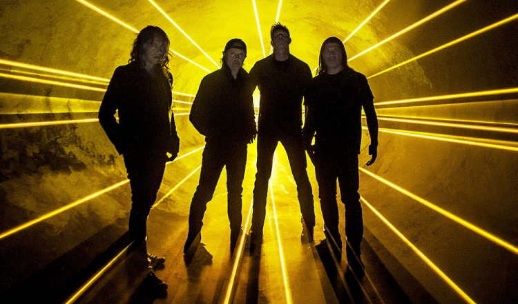

No início de 1981, influenciado pelo New Wave Of British Heavy Metal (NWOBHM), Lars colocou um anúncio no jornal The Recycler tentando encontrar outros músicos para que ele pudesse formar uma banda. James, em resposta ao anúncio encontra Lars, e decidem então formar uma banda juntos. Ambos pensaram em diversos nomes para a banda até que Lars "roubou" o nome Metallica de um amigo dele, editor de um fanzine, que buscava um nome para sua revista e sugeriu o atual nome da banda.
No final de 1981, o Metallica colocou sua primeira música (Hit the Lights) na compilação Metal Massacre 1. Nessa época, a formação da banda contava com James Hetfield na guitarra base, baixo e vocal, Lars Ulrich na bateria e Lloyd Grant na guitarra solo. Em 1982, juntou-se a banda, Ron McGovney, baixista e Dave Mustaine, guitarra solo.
Nesse mesmo ano, o Metallica gravou sua primeira demo com 4 músicas (Hit the Lights, The Mechanix, Jump in the Fire e Motorbreath), conhecida posteriormente como "Power Metal". Pouco tempo depois gravaram outra demo (No Life 'Till Leather) com regravações das músicas da primeira demo mais Metal Militia, Seek and Destroy e Phantom Lord.
Ainda em 1982, James e Lars viram pela primeira vez Cliff Burton em um show do Trauma. Impressionados com o modo que Cliff tocava, decidiram que ele deveria ser o baixista do Metallica (o baixista Ron McGovney havia brigado com James na época) e o convidaram a se juntar a banda. Na hora, ele recusou a oferta mas algum tempo depois, concordaria apenas se o Metallica se mudasse de Los Angeles para São Francisco. Em 1983 o Metallica terminou de se mudar para São Francisco e agora com Cliff, gravaram mais duas músicas: No Remorse e Whiplash Enquanto estavam em Nova York, James e Lars decidiram tirar Dave Mustaine da banda alegando excesso de bebidas alcóolicas. Para substituí-lo, chamaram Kirk Hammett, guitarrista do Exodus.Já em 1985, após assinar com a gravadora Elektra, Master of Puppets termina de ser gravado e em 1986 é mixado e, em seguida, lançado. Com o mesmo produtor do Ride the Lightning, o Metallica confirma neste álbum o thrash metal que vinha tocando desde Kill'em All. Master of Puppets é considerado por muitos o melhor álbum da banda e um dos melhores álbuns de metal de todos os tempos.
Ainda em 1986, no dia 27 de Setembro, Cliff Burton morre em um acidente com o ônibus da turnê, próximo a Ljungby, Suécia. Sua morte trágica torna o futuro da banda incerto. Com o apoio da família de Burton e sabendo que Cliff gostaria que a banda continuasse, os três membros restantes do Metallica começam as audições para a escolha de um novo baixista. Para substituí-lo, entra Jason Newsted na banda, o qual sofre inúmeras comparações. Em 1987, para anunciar a entrada do novo integrante, a banda lança o EP Garage Days Re-revisited com covers de outras bandas que influenciaram o Metallica.Em 1988 lançam seu quarto álbum ...And Justice For All, do qual sai o primeiro clipe da banda, One. O disco conta com algumas das músicas mais complexas estruturalmente e é indicado em 1989, pela primeira vez, a um Grammy (Melhor Performance Vocal ou Instrumental de Hard Rock/Metal). Em 1989, pela primeira vez, o Metallica toca no Brasil como parte da turnê Damaged Justice.
Em 1991, o álbum Metallica (conhecido como Black Album) é lançado, apresentando algumas diferenças na sonoridade da banda. O Black Album lança o Metallica no mainstream e diversas músicas desse álbum são executadas exaustivamente nas rádios do mundo. Grande parte do processo de composição deste álbum pode ser conferido no documentário A Year and a Half in the Life of Metallica. Em 1993 o Metallica volta a tocar no Brasil. Nesse mesmo ano, é lançado a caixa Live Shit: Binge and Purge contendo um diário de tour, 3 CDs, 2 shows em vídeo, um stencil e um Snake Pit Pass.Em 1996, o álbum Load é lançado com um sonoridade bem diferente dos outros álbums e os integrantes aparecem de cabelos curtos. Além disso, muitos fãs da época pré-Black Album do Metallica, acusam a banda de "terem se vendido a mídia". O Load originalmente deveria ser um álbum duplo e as músicas não lançadas resultou no Reload (1997), seguindo o mesmo padrão do álbum original. Em 1998, o Metallica lança Garage Inc., sendo seu primeiro CD duplo oficial. O CD 1 contém 11 covers inéditos e o CD 2, os covers do EP Creeping Death/Garage Days 84, Garage Day 87 e os B-sides de alguns singles. Depois de 6 anos, o Metallica volta a fazer shows no Brasil na turnê The Garage Remains The Same em 1999.
Em abril de 1999, o Metallica faz um show com Michael Kamen e a San Francisco Symphony Orchestra. Este show resultou em um CD duplo ao vivo (chamado S&M), lançado em novembro de 1999, contendo duas músicas inéditas: No Leaf Clover e - Human. Em 2000, é lançada a música I Disappear feita exclusivamente para o filme Missão Impossível 2. Em janeiro de 2001, Jason anuncia sua saída da banda alegando motivos particulares e pessoais, além do desgaste físico que teve durante os anos, depois de 14 anos com o Metallica. Em entrevistas posteriores, Newsted deixa claro que sua saída se deu devido a divergências principalmente com Hetfield, que não permitia que Jason se dedicasse a projetos fora do Metallica.Ainda em 2001, James Hetfield se interna em uma clínica de reabilitação para tratar de vícios com bebidas e outras substâncias. Por cerca de um ano, o Metallica simplesmente deixou de funcionar. Ulrich e Hammett, pela primeira vez, consideraram seriamente a idéia de que o Metallica poderia deixar de existir.
Um ano depois Hetfield sai da clínica e retorna a banda e os trabalhos começam a voltar ao normal lentamente. As gravações daquilo que se tornaria o 8 º. álbum da banda continuaram, com a banda como um trio. As partes de baixo ficaram a cargo do produtor Bob Rock. Depois de mais de 2 anos sem baixista, em fevereiro de 2003 o Metallica anuncia o novo integrante da banda: Robert Trujillo.
Em junho de 2003, o Metallica lança seu 8º. álbum de estúdio: St. Anger, com músicas longas, sem solos e produção precária. O álbum reflete o período de turbulência passado pela banda e documentado no filme "Some Kind of Monster". Após cerca de uma década e meia de parceira, o Metallica decide que a produção de seu nono álbum de estúdio não ficará a cargo de Bob Rock, que vinha produzindo os discos da banda desde 1991. O produtor escolhido foi Rick Rubin, que já trabalhou com Slayer, Red Hot Chili Peppers e System of a Down.
Devido as duras críticas recebidas pela banda após o St. Anger e a promessa de um som mais old-school, há uma grande expectativa em torno do lançamento deste novo disco. Como parte de uma campanha para promoção do álbum, é lançado em maio de 2008 o Mission: Metallica, site que mostra os bastidores da produção do Death Magnetic, o nono álbum da banda e o primeiro com Rob Trujillo no baixo. Em setembro de 2008, o disco é finalmente lançado e é recebido sob elogios quanto a sua sonoridade. Muitos consideram este disco como uma volta ao som dos quatro discos clássicos da banda, lançados nos anos 80. Os solos, que foram deixados de lado no St. Anger, estão de volta, a velocidade das músicas e o thrash que não se via deste ...And Justice For All também estão presentes.Mais informações em: Wikipedia Metallica
E também em: Metal Remains